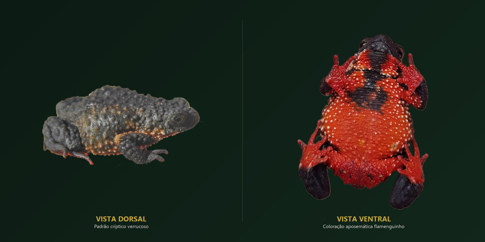
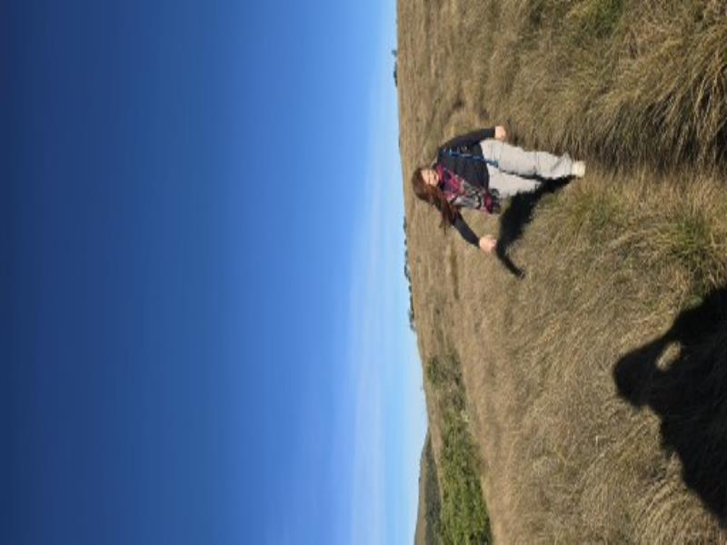

Passe o mouse para atrair em revoada • Clique para dispersar Toque para dispersar as borboletas
Micheli Mac Intir
Supervisora Ambiental • Gestão de Obras • Data Science (Python) • Especialista em Fauna (Ornitologia)
Supervisora ambiental com liderança em obras de infraestrutura e rodovias federais (BR-153 e BR-369 na Caruso), atuando com inteligência de dados aplicada em Python (MBA USP/ESALQ) e sólida especialização em fauna silvestre, com destacada ênfase em ornitologia costeira, marinha e continental (anilhamento CEMAVE e bioacústica). Sócia co-fundadora da BioKuri Soluções Ambientais.

Ornitologia costeira com tripé e teleobjetiva em água rasa (Porto de São Sebastião/SP).
Supervisora Ambiental, Cientista de Dados em Python e Especialista em Fauna
 Mastofauna • Tamanduá-bandeira
Mastofauna • Tamanduá-bandeira
 Inspeção de Campo
Inspeção de Campo
"Não acredito em biologia de gabinete. O rigor técnico em fauna e a modelagem de dados só têm valor real quando resolvem gargalos no chão da obra e garantem conformidade ambiental inatacável."
Sou Micheli Mac Intir, bióloga (UNIFATEA, bolsista CAPES), supervisora ambiental de obras de grande porte, especialista em fauna com foco prioritário em ornitologia e pós-graduanda em Data Science & Analytics pela USP/ESALQ.
Minha trajetória combina o comando técnico na supervisão e gestão ambiental em rodovias federais (BR-153 e BR-369 na Caruso), grandes complexos industriais de celulose (megafábrica da Arauco em Inocência/MS) e terminais portuários (Porto de São Sebastião) com a inteligência computacional em Python para automação de rotinas, cálculo de índices ecológicos e estruturação de métricas ESG.
Na frente de fauna silvestre, dedico especial dedicação à ornitologia — atuando desde o monitoramento de aves marinhas e costeiras em caiaque oceânico e áreas portuárias até o anilhamento científico (CEMAVE/ICMBio) e projetos de conservação como o Ornitofauna de Guaratinguetá (fomento BASF). Ao lado do taxonomista Lucas Aøsf, fundei a BioKuri — Pesquisa e Soluções Ambientais.
Supervisão & Gestão de Obras
Tratamento ágil de NCs, planos de ação imediatos e interface direta com engenharia civil.
Data Science em Python (USP)
Modelagem estatística na USP/ESALQ, pipelines ecológicos e dashboards automatizados ESG.
Fauna & Ornitologia
Aves marinhas, costeiras e continentais, anilhamento CEMAVE e bioacústica.
BioKuri Soluções
Co-fundadora unindo rigor taxonômico de ponta à conformidade corporativa rápida.
Supervisão Ambiental de Obras Rodoviárias (BR-153 & BR-369)
Atuação direta na Caruso Soluções Ambientais & Tecnológicas nas frentes das rodovias federais BR-153 e BR-369 (Jacarezinho/PR).
Gestão de Frentes & Engenharia
Coordenação técnica ambiental contínua nas frentes de obra, planejamento integrado com a engenharia de produção, vistorias operacionais diárias e mediação proativa para prevenção de paralisações e passivos socioambientais.
Não Conformidades (NC)
Realização de inspeções ambientais sistemáticas para identificar, registrar e tratar inconformidades em sistema informatizado, garantindo plano de ação corretivo imediato até a baixa pelo órgão ambiental.
Licenças, Outorgas & Terceiros
Controle estrito de condicionantes (LP, LI, LO), outorgas de captação/lançamento de recursos hídricos e auditoria de terceiros: banheiros químicos, bota-fora autorizado e controle de poeira (umectação com pipa).
Fauna Silvestre & Germoplasma
Acompanhamento de supressão vegetal autorizada, coordenação de resgate e afugentamento de animais silvestres e coleta de sementes, epífitas e propágulos de flora nativa para mitigação de impactos.
Kuri — do tupi-guarani significa Araucária. Raízes profundas, visão de longo alcance e respeito inegociável à vida silvestre.
Soluções Ambientais Inteligentes, Ágeis e Humanas
A BioKuri nasceu da sinergia entre o rigor taxonômico de museu e a urgência do mercado corporativo por consultorias que realmente entendam o cronograma rígido da engenharia, traduzindo as exigências de órgãos ambientais (IBAMA, IAT, CETESB, IMASUL) em conformidade técnica e documentada.
Como sócia-fundadora ao lado do biólogo e taxonomista Lucas Aøsf, lidero a gestão estratégica de contratos, coordenação de equipes de campo, diagnósticos de fauna e modelagem de indicadores ecológicos orientados a dados.
Sociedade & Visão Complementar
Taxonomia de Ponta • Execução Operacional"Na BioKuri, o conhecimento taxonômico e ecológico profundo encontra o pulso firme da supervisão de obras. Desatamos gargalos ambientais com embasamento inatacável."
Produção Científica & Projetos de Pesquisa
Artigos internacionais com dados de Ciência Cidadã, fomento industrial corporativo e presença climática global.
Update and Expansion of the Distribution of the Maldonado Redbelly Toad, Melanophryniscus moreirae Gallardo 1966, in Southeast Brazil, Using Citizen Science Data
Estudo inovador demonstrando a expansão da área de ocorrência do sapinho-flamenguinho de altitude (Melanophryniscus moreirae, anuro bioindicador de áreas montanhosas da Mata Atlântica) no Sudeste brasileiro através da integração de dados de ciência cidadã com validação morfológica e bioacústica rigorosa em campo.

O Papel do Reflorestamento na Restauração Microclimática e Atração da Avifauna no Parque das Nascentes
Avaliação empírica demonstrando como o adensamento florestal com espécies nativas amenizou a temperatura superficial do solo e atuou como refúgio térmico, multiplicando a riqueza da avifauna na bacia do Paraíba do Sul.
Projeto Ornitofauna de Guaratinguetá
Levantamento sazonal sistemático e anilhamento de ornitofauna, mapeando gradientes de pressão antrópica e áreas prioritárias de restauração florestal em matriz agropecuária e industrial.
Herpetofauna da Serra da Bocaina
Expedições sistemáticas de campo na parte alta da Serra da Bocaina (São José do Barreiro/SP) para preencher lacunas de distribuição biogeográfica de anfíbios anuros e répteis de mata nebular.
Experiência Profissional em Destaque
Da linha de frente rodoviária aos maiores complexos industriais de celulose, portos e hidrelétricas do Brasil.
Supervisora Ambiental
Caruso Soluções Ambientais & Tecnológicas
Coordenação técnica e operacional integral da supervisão ambiental nas frentes de obras das rodovias federais BR-153 e BR-369. Gestão rigorosa de condicionantes de licenças, tratamento e baixa de Não Conformidades (NC), auditoria de subcontratadas e terceiros, resgate e afugentamento de fauna e atendimento técnico aos órgãos fiscalizadores.
Sócia Co-Fundadora & Consultora Sênior
BioKuri — Pesquisa e Soluções Ambientais
Direção executiva e operacional da consultoria. Gestão de contratos, elaboração de programas ambientais (PBA), diagnósticos de fauna (EIA/RIMA, PCA, RCA), licenciamento estratégico e aplicação de Ciência de Dados a indicadores ecológicos corporativos.
Bióloga Consultora Especialista em Fauna
EcosBrasil • Elementus • Cayman • Engpacto
Execução de estudos de impacto, diagnósticos e monitoramento contínuo de fauna para grandes players do setor de celulose (megafábrica da Arauco em Inocência/MS e Cargill em Três Lagoas/MS), setor portuário (Porto de São Sebastião/SP, com ornitologia marinha em ilhas costeiras), hidrelétrico (PCH Verde em GO) e rodoviário (anel da BR-230/361 em Patos/PB).
Bióloga Pesquisadora & Educadora Ambiental
Instituto de Manejo da Biodiversidade (IMBio)
Pesquisa e manejo de fauna silvestre na Serra da Bocaina subsidiando a soltura e reintrodução de animais pela Polícia Militar Ambiental. Instrução especializada de identificação e manejo de fauna em áreas operacionais para o Estágio Básico do Combatente Aeromóvel (EBCA) do 5º Batalhão de Infantaria Leve (Exército Brasileiro). Apresentação científica na COP 30 (ONU 2025).
Competências Técnicas & Operacionais
Supervisão Ambiental & Gestão de Obras
- Gestão ambiental contínua em frentes rodoviárias (BR-153/369) e industriais
- Tratamento ágil e baixa de Não Conformidades (NC) junto à engenharia
- Monitoramento de condicionantes de licenças (LP, LI, LO) e outorgas hídricas
- Auditoria de terceiros: bota-fora autorizado, umectação de poeira e resíduos
- Elaboração de pareceres técnicos e respostas a notificações oficiais de órgãos
Especialista em Fauna (Ênfase em Ornitologia)
- Ornitologia de campo: levantamentos quali-quantitativos continentais e costeiros
- Aves marinhas e monitoramento com caiaque oceânico e teleobjetivas
- Anilhamento científico de aves (CEMAVE/ICMBio) e bioacústica de vocalizações
- Manejo, resgate e afugentamento de fauna silvestre em supressão vegetal
- Diagnósticos integrados de herpetofauna (anfíbios e répteis) e mastofauna
Data Science em Python & Inteligência Ecológica
- MBA em Data Science & Analytics (USP / ESALQ em andamento)
- Modelagem e análise estatística de biodiversidade em Python (Pandas/Scipy)
- Pipelines automatizados para relatórios ambientais e índices de Shannon/Simpson
- Visualização preditiva, gráficos executivos e indicadores ESG para auditorias
- Mineração e curadoria de dados em repositórios abertos (GBIF, SpeciesLink)
Liderança, Governança & Treinamentos
- Gestão operacional de equipes multidisciplinares e planejamento de rotinas
- Condução de Diálogos Diários de Segurança e Meio Ambiente (DDS)
- Instrução técnica de fauna para o Exército Brasileiro (5º BIL / EBCA)
- Capacitação de trabalhadores e operadores em preservação da biodiversidade
- Interface institucional com órgãos ambientais (IBAMA, IAT, CETESB, IMASUL)
Bastidores de Campo: Rigor Científico, Afeto e Bom Humor
A conservação se faz com bota na lama, água no peito, respeito à terra e amor autêntico pelos animais.
Monitoramento costeiro com câmera e tripé na água.
Registro de Myrmecophaga tridactyla durante campanha de mastofauna.
Trilhas de fauna e amostragem em áreas remotas.
Artigo internacional aceito para publicação (2026).

Inspeção ambiental e amostragem de fauna em áreas remotas.
Formação Acadêmica & Idiomas
MBA em Data Science e Analytics
Universidade de São Paulo (USP / ESALQ)
Especialização focada em modelagem preditiva, algoritmos aplicados a ciências biológicas, visualização de dados e governança ESG.
Licenciatura em Ciências Biológicas
Centro Universitário Teresa D'Ávila (UNIFATEA)
Bolsista CAPES. TCC voltado a "Levantamento Ornitológico no Parque Ecológico do Taboão, Lorena/SP" sob orientação do prof. Ricardo Mendonça.
Comunicação Técnica & Científica
- Português: Nativo
- Inglês: Fluência para leitura crítica de artigos internacionais, redação técnica de papers e diálogo profissional.
Entre em Contato
Disponível para demandas de supervisão ambiental de obras, diagnósticos de fauna, soluções pela BioKuri e parcerias acadêmicas.